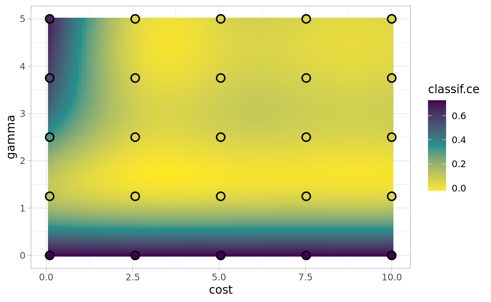
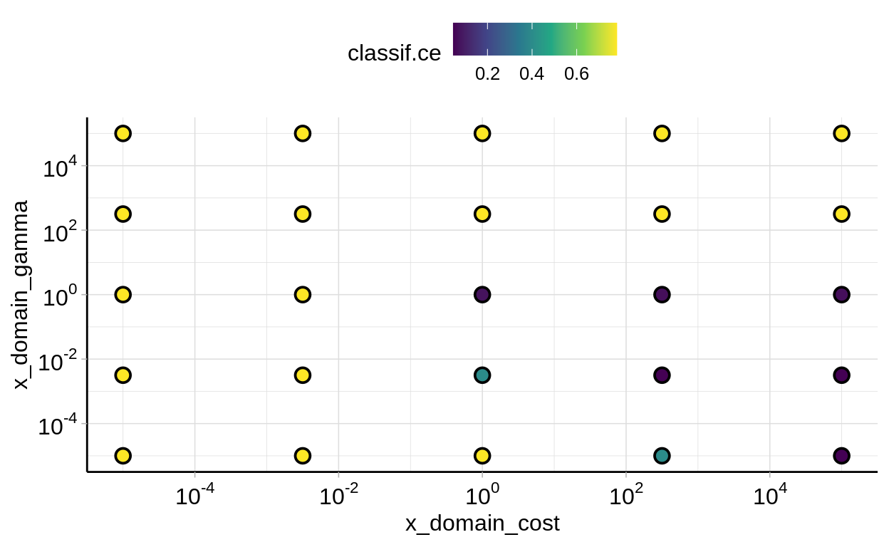

We demonstrate how to optimize the hyperparameters of a support vector machine (SVM).
This is the first part of the practical tuning series. The other parts can be found here:
In this post, we demonstrate how to optimize the hyperparameters of a support vector machine (SVM). We are using the mlr3 machine learning framework with the mlr3tuning extension package.
First, we start by showing the basic building blocks of mlr3tuning and tune the cost and gamma hyperparameters of an SVM with a radial basis function on the Iris data set. After that, we use transformations to tune the both hyperparameters on the logarithmic scale. Next, we explain the importance of dependencies to tune hyperparameters like degree which are dependent on the choice of kernel. After that, we fit an SVM with optimized hyperparameters on the full dataset. Finally, nested resampling is used to compute an unbiased performance estimate of our tuned SVM.
We load the mlr3verse package which pulls in the most important packages for this example.
We initialize the random number generator with a fixed seed for reproducibility, and decrease the verbosity of the logger to keep the output clearly represented. The lgr package is used for logging in all mlr3 packages. The mlr3 logger prints the logging messages from the base package, whereas the bbotk logger is responsible for logging messages from the optimization packages (e.g. mlr3tuning ).
set.seed(7832)
lgr::get_logger("mlr3")$set_threshold("warn")
lgr::get_logger("bbotk")$set_threshold("warn")
In the example, we use the Iris data set which classifies 150 flowers in three species of Iris. The flowers are characterized by sepal length and width and petal length and width. The Iris data set allows us to quickly fit models to it. However, the influence of hyperparameter tuning on the predictive performance might be minor. Other data sets might give more meaningful tuning results.
# retrieve the task from mlr3
task = tsk("iris")
# generate a quick textual overview using the skimr package
skimr::skim(task$data())
| Name | task$data() |
| Number of rows | 150 |
| Number of columns | 5 |
| Key | NULL |
| _______________________ | |
| Column type frequency: | |
| factor | 1 |
| numeric | 4 |
| ________________________ | |
| Group variables | None |
Variable type: factor
| skim_variable | n_missing | complete_rate | ordered | n_unique | top_counts |
|---|---|---|---|---|---|
| Species | 0 | 1 | FALSE | 3 | set: 50, ver: 50, vir: 50 |
Variable type: numeric
| skim_variable | n_missing | complete_rate | mean | sd | p0 | p25 | p50 | p75 | p100 | hist |
|---|---|---|---|---|---|---|---|---|---|---|
| Petal.Length | 0 | 1 | 3.76 | 1.77 | 1.0 | 1.6 | 4.35 | 5.1 | 6.9 | ▇▁▆▇▂ |
| Petal.Width | 0 | 1 | 1.20 | 0.76 | 0.1 | 0.3 | 1.30 | 1.8 | 2.5 | ▇▁▇▅▃ |
| Sepal.Length | 0 | 1 | 5.84 | 0.83 | 4.3 | 5.1 | 5.80 | 6.4 | 7.9 | ▆▇▇▅▂ |
| Sepal.Width | 0 | 1 | 3.06 | 0.44 | 2.0 | 2.8 | 3.00 | 3.3 | 4.4 | ▁▆▇▂▁ |
We choose the support vector machine implementation from the e1071 package (which is based on LIBSVM) and use it as a classification machine by setting type to "C-classification".
learner = lrn("classif.svm", type = "C-classification", kernel = "radial")
For tuning, it is important to create a search space that defines the type and range of the hyperparameters. A learner stores all information about its hyperparameters in the slot $param_set. Not all parameters are tunable. We have to choose a subset of the hyperparameters we want to tune.
as.data.table(learner$param_set)
| id | class | lower | upper | nlevels |
|---|---|---|---|---|
| cachesize | ParamDbl | -Inf | Inf | Inf |
| coef0 | ParamDbl | -Inf | Inf | Inf |
| cost | ParamDbl | 0 | Inf | Inf |
| cross | ParamInt | 0 | Inf | Inf |
| degree | ParamInt | 1 | Inf | Inf |
| gamma | ParamDbl | 0 | Inf | Inf |
| kernel | ParamFct | NA | NA | 4 |
| nu | ParamDbl | -Inf | Inf | Inf |
| shrinking | ParamLgl | NA | NA | 2 |
| tolerance | ParamDbl | 0 | Inf | Inf |
| type | ParamFct | NA | NA | 2 |
| fitted | ParamLgl | NA | NA | 2 |
| scale | ParamUty | NA | NA | Inf |
| class.weights | ParamUty | NA | NA | Inf |
| decision.values | ParamLgl | NA | NA | 2 |
We use the to_tune() function to define the range over which the hyperparameter should be tuned. We opt for the cost and gamma hyperparameters of the radial kernel and set the tuning ranges with lower and upper bounds.
We specify how to evaluate the performance of the different hyperparameter configurations. For this, we choose 3-fold cross validation as the resampling strategy and the classification error as the performance measure.
Usually, we have to select a budget for the tuning. This is done by choosing a Terminator, which stops the tuning e.g. after a performance level is reached or after a given time. However, some tuners like grid search terminate themselves. In this case, we choose a terminator that never stops and the tuning is not stopped before all grid points are evaluated.
terminator = trm("none")
At this point, we can construct a TuningInstanceSingleCrit that describes the tuning problem.
instance = TuningInstanceSingleCrit$new(
task = task,
learner = learner,
resampling = resampling,
measure = measure,
terminator = terminator
)
print(instance)
<TuningInstanceSingleCrit>
* State: Not optimized
* Objective: <ObjectiveTuning:classif.svm_on_iris>
* Search Space:
<ParamSet>
id class lower upper nlevels default value
1: cost ParamDbl 0.1 10 Inf <NoDefault[3]>
2: gamma ParamDbl 0.0 5 Inf <NoDefault[3]>
* Terminator: <TerminatorNone>
* Terminated: FALSE
* Archive:
<ArchiveTuning>
Null data.table (0 rows and 0 cols)Finally, we have to choose a Tuner. Grid Search discretizes numeric parameters into a given resolution and constructs a grid from the Cartesian product of these sets. Categorical parameters produce a grid over all levels specified in the search space. In this example, we only use a resolution of 5 to keep the runtime low. Usually, a higher resolution is used to create a denser grid.
<TunerGridSearch>
* Parameters: resolution=5, batch_size=1
* Parameter classes: ParamLgl, ParamInt, ParamDbl, ParamFct
* Properties: dependencies, single-crit, multi-crit
* Packages: -We can preview the proposed configurations by using generate_design_grid(). This function is internally executed by TunerGridSearch.
generate_design_grid(learner$param_set$search_space(), resolution = 5)
<Design> with 25 rows:
cost gamma
1: 0.100 0.00
2: 0.100 1.25
3: 0.100 2.50
4: 0.100 3.75
5: 0.100 5.00
6: 2.575 0.00
7: 2.575 1.25
8: 2.575 2.50
9: 2.575 3.75
10: 2.575 5.00
11: 5.050 0.00
12: 5.050 1.25
13: 5.050 2.50
14: 5.050 3.75
15: 5.050 5.00
16: 7.525 0.00
17: 7.525 1.25
18: 7.525 2.50
19: 7.525 3.75
20: 7.525 5.00
21: 10.000 0.00
22: 10.000 1.25
23: 10.000 2.50
24: 10.000 3.75
25: 10.000 5.00
cost gammaWe trigger the tuning by passing the TuningInstanceSingleCrit to the $optimize() method of the Tuner. The instance is modified in-place.
tuner$optimize(instance)
We plot the performances depending on the evaluated cost and gamma values.

The points mark the evaluated cost and gamma values. We should not infer the performance of new values from the heatmap since it is only an interpolation. However, we can see the general interaction between the hyperparameters.
Tuning a learner can be shortened by using the tune()-shortcut.
learner = lrn("classif.svm", type = "C-classification", kernel = "radial")
learner$param_set$values$cost = to_tune(0.1, 10)
learner$param_set$values$gamma = to_tune(0, 5)
instance = tune(
method = "grid_search",
task = tsk("iris"),
learner = learner,
resampling = rsmp ("holdout"),
measure = msr("classif.ce"),
resolution = 5
)
Next, we want to tune the cost and gamma hyperparameter more efficiently. It is recommended to tune cost and gamma on the logarithmic scale (Hsu, Chang, and Lin 2003). The log transformation emphasizes smaller cost and gamma values but also creates large values. Therefore, we use a log transformation to emphasize this region of the search space with a denser grid.
Generally speaking, transformations can be used to convert hyperparameters to a new scale. These transformations are applied before the proposed configuration is passed to the Learner. We can directly define the transformation in the to_tune() function. The lower and upper bound is set on the original scale.
learner = lrn("classif.svm", type = "C-classification", kernel = "radial")
# tune from 2^-15 to 2^15 on a log scale
learner$param_set$values$cost = to_tune(p_dbl(-15, 15, trafo = function(x) 2^x))
# tune from 2^-15 to 2^5 on a log scale
learner$param_set$values$gamma = to_tune(p_dbl(-15, 5, trafo = function(x) 2^x))
Transformations to the log scale are the ones most commonly used. We can use a shortcut for this transformation. The lower and upper bound is set on the transformed scale.
We use the tune()-shortcut to run the tuning.
instance = tune(
method = "grid_search",
task = task,
learner = learner,
resampling = resampling,
measure = measure,
resolution = 5
)
The hyperparameter values after the transformation are stored in the x_domain column as lists. We can expand these lists into multiple columns by using as.data.table(). The hyperparameter names are prefixed by x_domain.
as.data.table(instance$archive)
| cost | gamma | x_domain_cost | x_domain_gamma |
|---|---|---|---|
| 11.512925 | -11.512925 | 1.000000e+05 | 1.000000e-05 |
| 5.756463 | 0.000000 | 3.162278e+02 | 1.000000e+00 |
| -11.512925 | 11.512925 | 1.000000e-05 | 1.000000e+05 |
| 0.000000 | 5.756463 | 1.000000e+00 | 3.162278e+02 |
| -11.512925 | -5.756463 | 1.000000e-05 | 3.162300e-03 |
| 0.000000 | 0.000000 | 1.000000e+00 | 1.000000e+00 |
| 11.512925 | 5.756463 | 1.000000e+05 | 3.162278e+02 |
| -5.756463 | -11.512925 | 3.162300e-03 | 1.000000e-05 |
| -11.512925 | -11.512925 | 1.000000e-05 | 1.000000e-05 |
| -5.756463 | 11.512925 | 3.162300e-03 | 1.000000e+05 |
| -11.512925 | 5.756463 | 1.000000e-05 | 3.162278e+02 |
| 11.512925 | 0.000000 | 1.000000e+05 | 1.000000e+00 |
| -11.512925 | 0.000000 | 1.000000e-05 | 1.000000e+00 |
| 5.756463 | -11.512925 | 3.162278e+02 | 1.000000e-05 |
| 5.756463 | 5.756463 | 3.162278e+02 | 3.162278e+02 |
| 5.756463 | -5.756463 | 3.162278e+02 | 3.162300e-03 |
| 5.756463 | 11.512925 | 3.162278e+02 | 1.000000e+05 |
| 11.512925 | 11.512925 | 1.000000e+05 | 1.000000e+05 |
| 11.512925 | -5.756463 | 1.000000e+05 | 3.162300e-03 |
| -5.756463 | -5.756463 | 3.162300e-03 | 3.162300e-03 |
| 0.000000 | -11.512925 | 1.000000e+00 | 1.000000e-05 |
| 0.000000 | 11.512925 | 1.000000e+00 | 1.000000e+05 |
| 0.000000 | -5.756463 | 1.000000e+00 | 3.162300e-03 |
| -5.756463 | 0.000000 | 3.162300e-03 | 1.000000e+00 |
| -5.756463 | 5.756463 | 3.162300e-03 | 3.162278e+02 |
We plot the performances depending on the evaluated cost and gamma values.
library(ggplot2)
library(scales)
autoplot(instance, type = "points", cols_x = c("x_domain_cost", "x_domain_gamma")) +
scale_x_continuous(
trans = log2_trans(),
breaks = trans_breaks("log10", function(x) 10^x),
labels = trans_format("log10", math_format(10^.x))) +
scale_y_continuous(
trans = log2_trans(),
breaks = trans_breaks("log10", function(x) 10^x),
labels = trans_format("log10", math_format(10^.x)))

Dependencies ensure that certain parameters are only proposed depending on values of other hyperparameters. We want to tune the degree hyperparameter that is only needed for the polynomial kernel.
learner = lrn("classif.svm", type = "C-classification")
learner$param_set$values$cost = to_tune(p_dbl(1e-5, 1e5, logscale = TRUE))
learner$param_set$values$gamma = to_tune(p_dbl(1e-5, 1e5, logscale = TRUE))
learner$param_set$values$kernel = to_tune(c("polynomial", "radial"))
learner$param_set$values$degree = to_tune(1, 4)
The dependencies are already stored in the learner parameter set.
learner$param_set$deps
id on cond
1: cost type <CondEqual[9]>
2: nu type <CondEqual[9]>
3: degree kernel <CondEqual[9]>
4: coef0 kernel <CondAnyOf[9]>
5: gamma kernel <CondAnyOf[9]>The gamma hyperparameter depends on the kernel being polynomial, radial or sigmoid
learner$param_set$deps$cond[[5]]
CondAnyOf: x ∈ {polynomial, radial, sigmoid}whereas the degree hyperparameter is solely used by the polynomial kernel.
learner$param_set$deps$cond[[3]]
CondEqual: x = polynomialWe preview the grid to show the effect of the dependencies.
generate_design_grid(learner$param_set$search_space(), resolution = 2)
<Design> with 12 rows:
cost gamma kernel degree
1: -11.51293 -11.51293 polynomial 1
2: -11.51293 -11.51293 polynomial 4
3: -11.51293 -11.51293 radial NA
4: -11.51293 11.51293 polynomial 1
5: -11.51293 11.51293 polynomial 4
6: -11.51293 11.51293 radial NA
7: 11.51293 -11.51293 polynomial 1
8: 11.51293 -11.51293 polynomial 4
9: 11.51293 -11.51293 radial NA
10: 11.51293 11.51293 polynomial 1
11: 11.51293 11.51293 polynomial 4
12: 11.51293 11.51293 radial NAThe value for degree is NA if the dependency on the kernel is not satisfied.
We use the tune()-shortcut to run the tuning.
instance = tune(
method = "grid_search",
task = task,
learner = learner,
resampling = resampling,
measure = measure,
resolution = 3
)
instance$result
cost gamma kernel degree learner_param_vals x_domain classif.ce
1: 0 0 polynomial 1 <list[5]> <list[4]> 0.02We add the optimized hyperparameters to the learner and train the learner on the full dataset.
learner = lrn("classif.svm")
learner$param_set$values = instance$result_learner_param_vals
learner$train(task)
The trained model can now be used to make predictions on new data. A common mistake is to report the performance estimated on the resampling sets on which the tuning was performed (instance$result_y) as the model’s performance. These scores might be biased and overestimate the ability of the fitted model to predict with new data. Instead, we have to use nested resampling to get an unbiased performance estimate.
Tuning should not be performed on the same resampling sets which are used for evaluating the model itself, since this would result in a biased performance estimate. Nested resampling uses an outer and inner resampling to separate the tuning from the performance estimation of the model. We can use the AutoTuner class for running nested resampling. The AutoTuner wraps a Learner and tunes the hyperparameter of the learner during $train(). This is our inner resampling loop.
learner = lrn("classif.svm", type = "C-classification")
learner$param_set$values$cost = to_tune(p_dbl(1e-5, 1e5, logscale = TRUE))
learner$param_set$values$gamma = to_tune(p_dbl(1e-5, 1e5, logscale = TRUE))
learner$param_set$values$kernel = to_tune(c("polynomial", "radial"))
learner$param_set$values$degree = to_tune(1, 4)
resampling_inner = rsmp("cv", folds = 3)
terminator = trm("none")
tuner = tnr("grid_search", resolution = 3)
at = AutoTuner$new(
learner = learner,
resampling = resampling_inner,
measure = measure,
terminator = terminator,
tuner = tuner,
store_models = TRUE)
We put the AutoTuner into a resample() call to get the outer resampling loop.
We check the inner tuning results for stable hyperparameters. This means that the selected hyperparameters should not vary too much. We might observe unstable models in this example because the small data set and the low number of resampling iterations might introduce too much randomness. Usually, we aim for the selection of stable hyperparameters for all outer training sets.
| iteration | cost | gamma | kernel | degree | classif.ce | task_id | learner_id | resampling_id |
|---|---|---|---|---|---|---|---|---|
| 1 | 0.00000 | 11.51293 | polynomial | 1 | 0.0401070 | iris | classif.svm.tuned | cv |
| 2 | 11.51293 | -11.51293 | radial | NA | 0.0496138 | iris | classif.svm.tuned | cv |
| 3 | 11.51293 | -11.51293 | radial | NA | 0.0303030 | iris | classif.svm.tuned | cv |
Next, we want to compare the predictive performances estimated on the outer resampling to the inner resampling (extract_inner_tuning_results(rr)). Significantly lower predictive performances on the outer resampling indicate that the models with the optimized hyperparameters overfit the data.
rr$score()
| iteration | task_id | learner_id | resampling_id | classif.ce |
|---|---|---|---|---|
| 1 | iris | classif.svm.tuned | cv | 0.06 |
| 2 | iris | classif.svm.tuned | cv | 0.04 |
| 3 | iris | classif.svm.tuned | cv | 0.04 |
The archives of the AutoTuners allows us to inspect all evaluated hyperparameters configurations with the associated predictive performances.
| iteration | cost | gamma | kernel | degree | classif.ce | runtime_learners | timestamp | batch_nr | task_id | learner_id | resampling_id |
|---|---|---|---|---|---|---|---|---|---|---|---|
| 1 | 11.51293 | 11.51293 | polynomial | 2 | 0.1705288 | 0.039 | 2021-06-13 15:49:10 | 1 | iris | classif.svm.tuned | cv |
| 1 | -11.51293 | -11.51293 | polynomial | 1 | 0.5392157 | 0.020 | 2021-06-13 15:49:10 | 2 | iris | classif.svm.tuned | cv |
| 1 | -11.51293 | 11.51293 | radial | NA | 0.6200238 | 0.022 | 2021-06-13 15:49:10 | 3 | iris | classif.svm.tuned | cv |
| 1 | 0.00000 | 0.00000 | polynomial | 4 | 0.1209150 | 0.022 | 2021-06-13 15:49:11 | 4 | iris | classif.svm.tuned | cv |
| 1 | 0.00000 | 0.00000 | radial | NA | 0.0704100 | 0.036 | 2021-06-13 15:49:11 | 5 | iris | classif.svm.tuned | cv |
| 1 | -11.51293 | 0.00000 | polynomial | 1 | 0.5392157 | 0.022 | 2021-06-13 15:49:11 | 6 | iris | classif.svm.tuned | cv |
| 1 | 0.00000 | -11.51293 | radial | NA | 0.5392157 | 0.022 | 2021-06-13 15:49:11 | 7 | iris | classif.svm.tuned | cv |
| 1 | 11.51293 | -11.51293 | polynomial | 4 | 0.5998217 | 0.024 | 2021-06-13 15:49:11 | 8 | iris | classif.svm.tuned | cv |
| 1 | -11.51293 | 0.00000 | radial | NA | 0.5392157 | 0.030 | 2021-06-13 15:49:12 | 9 | iris | classif.svm.tuned | cv |
| 1 | 0.00000 | 0.00000 | polynomial | 1 | 0.0502080 | 0.025 | 2021-06-13 15:49:12 | 10 | iris | classif.svm.tuned | cv |
| 1 | -11.51293 | 11.51293 | polynomial | 1 | 0.0502080 | 0.020 | 2021-06-13 15:49:12 | 11 | iris | classif.svm.tuned | cv |
| 1 | 0.00000 | 0.00000 | polynomial | 2 | 0.1313131 | 0.023 | 2021-06-13 15:49:12 | 12 | iris | classif.svm.tuned | cv |
| 1 | 11.51293 | 0.00000 | polynomial | 4 | 0.1408200 | 0.022 | 2021-06-13 15:49:12 | 13 | iris | classif.svm.tuned | cv |
| 1 | 0.00000 | -11.51293 | polynomial | 1 | 0.5392157 | 0.024 | 2021-06-13 15:49:13 | 14 | iris | classif.svm.tuned | cv |
| 1 | -11.51293 | -11.51293 | polynomial | 4 | 0.6705288 | 0.025 | 2021-06-13 15:49:13 | 15 | iris | classif.svm.tuned | cv |
| 1 | 0.00000 | 11.51293 | polynomial | 1 | 0.0401070 | 0.064 | 2021-06-13 15:49:13 | 16 | iris | classif.svm.tuned | cv |
| 1 | 11.51293 | -11.51293 | polynomial | 1 | 0.0502080 | 0.021 | 2021-06-13 15:49:13 | 17 | iris | classif.svm.tuned | cv |
| 1 | 11.51293 | 11.51293 | polynomial | 4 | 0.1408200 | 0.023 | 2021-06-13 15:49:13 | 18 | iris | classif.svm.tuned | cv |
| 1 | -11.51293 | 0.00000 | polynomial | 2 | 0.5392157 | 0.023 | 2021-06-13 15:49:14 | 19 | iris | classif.svm.tuned | cv |
| 1 | 11.51293 | 0.00000 | polynomial | 1 | 0.0401070 | 0.048 | 2021-06-13 15:49:14 | 20 | iris | classif.svm.tuned | cv |
| 1 | 0.00000 | 11.51293 | polynomial | 4 | 0.1408200 | 0.027 | 2021-06-13 15:49:14 | 21 | iris | classif.svm.tuned | cv |
| 1 | 0.00000 | -11.51293 | polynomial | 4 | 0.6705288 | 0.022 | 2021-06-13 15:49:14 | 22 | iris | classif.svm.tuned | cv |
| 1 | 11.51293 | 0.00000 | polynomial | 2 | 0.1705288 | 0.044 | 2021-06-13 15:49:15 | 23 | iris | classif.svm.tuned | cv |
| 1 | 11.51293 | 0.00000 | radial | NA | 0.0805110 | 0.022 | 2021-06-13 15:49:15 | 24 | iris | classif.svm.tuned | cv |
| 1 | 11.51293 | 11.51293 | polynomial | 1 | 0.0989305 | 1.451 | 2021-06-13 15:49:16 | 25 | iris | classif.svm.tuned | cv |
| 1 | -11.51293 | 11.51293 | polynomial | 2 | 0.1705288 | 0.041 | 2021-06-13 15:49:17 | 26 | iris | classif.svm.tuned | cv |
| 1 | 11.51293 | 11.51293 | radial | NA | 0.5998217 | 0.021 | 2021-06-13 15:49:17 | 27 | iris | classif.svm.tuned | cv |
| 1 | -11.51293 | -11.51293 | radial | NA | 0.5392157 | 0.021 | 2021-06-13 15:49:17 | 28 | iris | classif.svm.tuned | cv |
| 1 | 0.00000 | 11.51293 | radial | NA | 0.5998217 | 0.036 | 2021-06-13 15:49:17 | 29 | iris | classif.svm.tuned | cv |
| 1 | 0.00000 | 11.51293 | polynomial | 2 | 0.1705288 | 0.038 | 2021-06-13 15:49:17 | 30 | iris | classif.svm.tuned | cv |
| 1 | -11.51293 | -11.51293 | polynomial | 2 | 0.5392157 | 0.026 | 2021-06-13 15:49:18 | 31 | iris | classif.svm.tuned | cv |
| 1 | 0.00000 | -11.51293 | polynomial | 2 | 0.5392157 | 0.021 | 2021-06-13 15:49:18 | 32 | iris | classif.svm.tuned | cv |
| 1 | -11.51293 | 11.51293 | polynomial | 4 | 0.1408200 | 0.029 | 2021-06-13 15:49:18 | 33 | iris | classif.svm.tuned | cv |
| 1 | 11.51293 | -11.51293 | polynomial | 2 | 0.5392157 | 0.020 | 2021-06-13 15:49:18 | 34 | iris | classif.svm.tuned | cv |
| 1 | 11.51293 | -11.51293 | radial | NA | 0.0404040 | 0.020 | 2021-06-13 15:49:18 | 35 | iris | classif.svm.tuned | cv |
| 1 | -11.51293 | 0.00000 | polynomial | 4 | 0.5998217 | 0.024 | 2021-06-13 15:49:19 | 36 | iris | classif.svm.tuned | cv |
| 2 | 0.00000 | 0.00000 | polynomial | 2 | 0.1883541 | 0.030 | 2021-06-13 15:49:10 | 1 | iris | classif.svm.tuned | cv |
| 2 | 11.51293 | 0.00000 | polynomial | 4 | 0.1892454 | 0.057 | 2021-06-13 15:49:10 | 2 | iris | classif.svm.tuned | cv |
| 2 | -11.51293 | -11.51293 | polynomial | 2 | 0.7608437 | 0.020 | 2021-06-13 15:49:10 | 3 | iris | classif.svm.tuned | cv |
| 2 | 0.00000 | -11.51293 | polynomial | 1 | 0.7608437 | 0.021 | 2021-06-13 15:49:11 | 4 | iris | classif.svm.tuned | cv |
| 2 | -11.51293 | 0.00000 | polynomial | 4 | 0.7608437 | 0.028 | 2021-06-13 15:49:11 | 5 | iris | classif.svm.tuned | cv |
| 2 | -11.51293 | 0.00000 | polynomial | 1 | 0.7608437 | 0.021 | 2021-06-13 15:49:11 | 6 | iris | classif.svm.tuned | cv |
| 2 | 0.00000 | 0.00000 | polynomial | 4 | 0.1892454 | 0.024 | 2021-06-13 15:49:11 | 7 | iris | classif.svm.tuned | cv |
| 2 | -11.51293 | -11.51293 | polynomial | 1 | 0.7608437 | 0.028 | 2021-06-13 15:49:11 | 8 | iris | classif.svm.tuned | cv |
| 2 | 11.51293 | 11.51293 | polynomial | 2 | 0.2376708 | 2.337 | 2021-06-13 15:49:14 | 9 | iris | classif.svm.tuned | cv |
| 2 | 0.00000 | 11.51293 | polynomial | 4 | 0.1892454 | 0.059 | 2021-06-13 15:49:14 | 10 | iris | classif.svm.tuned | cv |
| 2 | 11.51293 | 0.00000 | radial | NA | 0.0799168 | 0.024 | 2021-06-13 15:49:14 | 11 | iris | classif.svm.tuned | cv |
| 2 | 0.00000 | 11.51293 | polynomial | 2 | 0.2376708 | 2.329 | 2021-06-13 15:49:17 | 12 | iris | classif.svm.tuned | cv |
| 2 | 11.51293 | -11.51293 | radial | NA | 0.0496138 | 0.021 | 2021-06-13 15:49:17 | 13 | iris | classif.svm.tuned | cv |
| 2 | 11.51293 | 11.51293 | radial | NA | 0.7608437 | 0.022 | 2021-06-13 15:49:17 | 14 | iris | classif.svm.tuned | cv |
| 2 | -11.51293 | 0.00000 | polynomial | 2 | 0.7608437 | 0.021 | 2021-06-13 15:49:17 | 15 | iris | classif.svm.tuned | cv |
| 2 | 0.00000 | 11.51293 | radial | NA | 0.7608437 | 0.025 | 2021-06-13 15:49:18 | 16 | iris | classif.svm.tuned | cv |
| 2 | 11.51293 | 11.51293 | polynomial | 4 | 0.1892454 | 0.058 | 2021-06-13 15:49:18 | 17 | iris | classif.svm.tuned | cv |
| 2 | 11.51293 | 11.51293 | polynomial | 1 | 0.0799168 | 0.021 | 2021-06-13 15:49:18 | 18 | iris | classif.svm.tuned | cv |
| 2 | 0.00000 | 0.00000 | polynomial | 1 | 0.0496138 | 0.024 | 2021-06-13 15:49:18 | 19 | iris | classif.svm.tuned | cv |
| 2 | 0.00000 | 11.51293 | polynomial | 1 | 0.0799168 | 0.027 | 2021-06-13 15:49:19 | 20 | iris | classif.svm.tuned | cv |
| 2 | 0.00000 | -11.51293 | polynomial | 2 | 0.7608437 | 0.025 | 2021-06-13 15:49:19 | 21 | iris | classif.svm.tuned | cv |
| 2 | 0.00000 | -11.51293 | radial | NA | 0.7608437 | 0.029 | 2021-06-13 15:49:19 | 22 | iris | classif.svm.tuned | cv |
| 2 | -11.51293 | 11.51293 | polynomial | 1 | 0.0496138 | 0.040 | 2021-06-13 15:49:19 | 23 | iris | classif.svm.tuned | cv |
| 2 | -11.51293 | -11.51293 | polynomial | 4 | 0.7608437 | 0.019 | 2021-06-13 15:49:19 | 24 | iris | classif.svm.tuned | cv |
| 2 | 11.51293 | 0.00000 | polynomial | 2 | 0.1494355 | 1.529 | 2021-06-13 15:49:21 | 25 | iris | classif.svm.tuned | cv |
| 2 | 0.00000 | 0.00000 | radial | NA | 0.0600119 | 0.053 | 2021-06-13 15:49:21 | 26 | iris | classif.svm.tuned | cv |
| 2 | 0.00000 | -11.51293 | polynomial | 4 | 0.7608437 | 0.028 | 2021-06-13 15:49:22 | 27 | iris | classif.svm.tuned | cv |
| 2 | 11.51293 | -11.51293 | polynomial | 1 | 0.0496138 | 0.020 | 2021-06-13 15:49:22 | 28 | iris | classif.svm.tuned | cv |
| 2 | 11.51293 | 0.00000 | polynomial | 1 | 0.0799168 | 0.024 | 2021-06-13 15:49:22 | 29 | iris | classif.svm.tuned | cv |
| 2 | -11.51293 | 11.51293 | polynomial | 2 | 0.1592395 | 1.561 | 2021-06-13 15:49:24 | 30 | iris | classif.svm.tuned | cv |
| 2 | -11.51293 | 0.00000 | radial | NA | 0.7608437 | 0.021 | 2021-06-13 15:49:24 | 31 | iris | classif.svm.tuned | cv |
| 2 | -11.51293 | 11.51293 | radial | NA | 0.7608437 | 0.025 | 2021-06-13 15:49:24 | 32 | iris | classif.svm.tuned | cv |
| 2 | 11.51293 | -11.51293 | polynomial | 2 | 0.7608437 | 0.037 | 2021-06-13 15:49:24 | 33 | iris | classif.svm.tuned | cv |
| 2 | -11.51293 | -11.51293 | radial | NA | 0.7608437 | 0.021 | 2021-06-13 15:49:25 | 34 | iris | classif.svm.tuned | cv |
| 2 | 11.51293 | -11.51293 | polynomial | 4 | 0.7608437 | 0.019 | 2021-06-13 15:49:25 | 35 | iris | classif.svm.tuned | cv |
| 2 | -11.51293 | 11.51293 | polynomial | 4 | 0.1892454 | 0.059 | 2021-06-13 15:49:25 | 36 | iris | classif.svm.tuned | cv |
| 3 | 11.51293 | 0.00000 | polynomial | 1 | 0.0597148 | 0.029 | 2021-06-13 15:49:10 | 1 | iris | classif.svm.tuned | cv |
| 3 | -11.51293 | 0.00000 | polynomial | 1 | 0.7192513 | 0.023 | 2021-06-13 15:49:10 | 2 | iris | classif.svm.tuned | cv |
| 3 | 0.00000 | -11.51293 | polynomial | 2 | 0.7192513 | 0.022 | 2021-06-13 15:49:10 | 3 | iris | classif.svm.tuned | cv |
| 3 | 11.51293 | 0.00000 | polynomial | 2 | 0.0900178 | 0.022 | 2021-06-13 15:49:10 | 4 | iris | classif.svm.tuned | cv |
| 3 | -11.51293 | -11.51293 | polynomial | 2 | 0.7192513 | 0.036 | 2021-06-13 15:49:11 | 5 | iris | classif.svm.tuned | cv |
| 3 | 0.00000 | 0.00000 | polynomial | 2 | 0.0802139 | 0.022 | 2021-06-13 15:49:11 | 6 | iris | classif.svm.tuned | cv |
| 3 | 0.00000 | 11.51293 | radial | NA | 0.7192513 | 0.022 | 2021-06-13 15:49:11 | 7 | iris | classif.svm.tuned | cv |
| 3 | -11.51293 | 0.00000 | polynomial | 4 | 0.7192513 | 0.031 | 2021-06-13 15:49:11 | 8 | iris | classif.svm.tuned | cv |
| 3 | 0.00000 | 11.51293 | polynomial | 1 | 0.0597148 | 0.027 | 2021-06-13 15:49:12 | 9 | iris | classif.svm.tuned | cv |
| 3 | 0.00000 | -11.51293 | polynomial | 4 | 0.7192513 | 0.027 | 2021-06-13 15:49:12 | 10 | iris | classif.svm.tuned | cv |
| 3 | 11.51293 | -11.51293 | polynomial | 2 | 0.7192513 | 0.021 | 2021-06-13 15:49:12 | 11 | iris | classif.svm.tuned | cv |
| 3 | 11.51293 | -11.51293 | polynomial | 4 | 0.7192513 | 0.026 | 2021-06-13 15:49:12 | 12 | iris | classif.svm.tuned | cv |
| 3 | 11.51293 | -11.51293 | polynomial | 1 | 0.0404040 | 0.020 | 2021-06-13 15:49:12 | 13 | iris | classif.svm.tuned | cv |
| 3 | -11.51293 | 0.00000 | radial | NA | 0.7192513 | 0.023 | 2021-06-13 15:49:12 | 14 | iris | classif.svm.tuned | cv |
| 3 | -11.51293 | -11.51293 | radial | NA | 0.7192513 | 0.021 | 2021-06-13 15:49:13 | 15 | iris | classif.svm.tuned | cv |
| 3 | 11.51293 | 0.00000 | radial | NA | 0.0897207 | 0.029 | 2021-06-13 15:49:13 | 16 | iris | classif.svm.tuned | cv |
| 3 | 0.00000 | 0.00000 | radial | NA | 0.0505051 | 0.022 | 2021-06-13 15:49:13 | 17 | iris | classif.svm.tuned | cv |
| 3 | -11.51293 | 11.51293 | polynomial | 1 | 0.0404040 | 0.021 | 2021-06-13 15:49:13 | 18 | iris | classif.svm.tuned | cv |
| 3 | -11.51293 | -11.51293 | polynomial | 1 | 0.7192513 | 0.024 | 2021-06-13 15:49:13 | 19 | iris | classif.svm.tuned | cv |
| 3 | 0.00000 | -11.51293 | polynomial | 1 | 0.7192513 | 0.021 | 2021-06-13 15:49:14 | 20 | iris | classif.svm.tuned | cv |
| 3 | 11.51293 | 11.51293 | polynomial | 2 | 0.0900178 | 0.024 | 2021-06-13 15:49:14 | 21 | iris | classif.svm.tuned | cv |
| 3 | 0.00000 | 0.00000 | polynomial | 1 | 0.0404040 | 0.025 | 2021-06-13 15:49:14 | 22 | iris | classif.svm.tuned | cv |
| 3 | 0.00000 | 0.00000 | polynomial | 4 | 0.1589424 | 0.041 | 2021-06-13 15:49:14 | 23 | iris | classif.svm.tuned | cv |
| 3 | 11.51293 | 11.51293 | polynomial | 1 | 0.0597148 | 0.027 | 2021-06-13 15:49:15 | 24 | iris | classif.svm.tuned | cv |
| 3 | 11.51293 | 11.51293 | polynomial | 4 | 0.1488414 | 0.021 | 2021-06-13 15:49:15 | 25 | iris | classif.svm.tuned | cv |
| 3 | -11.51293 | -11.51293 | polynomial | 4 | 0.7192513 | 0.038 | 2021-06-13 15:49:15 | 26 | iris | classif.svm.tuned | cv |
| 3 | -11.51293 | 11.51293 | polynomial | 2 | 0.0900178 | 0.024 | 2021-06-13 15:49:15 | 27 | iris | classif.svm.tuned | cv |
| 3 | 0.00000 | 11.51293 | polynomial | 4 | 0.1488414 | 0.021 | 2021-06-13 15:49:15 | 28 | iris | classif.svm.tuned | cv |
| 3 | -11.51293 | 11.51293 | radial | NA | 0.7192513 | 0.026 | 2021-06-13 15:49:16 | 29 | iris | classif.svm.tuned | cv |
| 3 | 0.00000 | -11.51293 | radial | NA | 0.7192513 | 0.021 | 2021-06-13 15:49:16 | 30 | iris | classif.svm.tuned | cv |
| 3 | 11.51293 | 11.51293 | radial | NA | 0.7192513 | 0.022 | 2021-06-13 15:49:16 | 31 | iris | classif.svm.tuned | cv |
| 3 | 11.51293 | 0.00000 | polynomial | 4 | 0.1488414 | 0.026 | 2021-06-13 15:49:16 | 32 | iris | classif.svm.tuned | cv |
| 3 | -11.51293 | 11.51293 | polynomial | 4 | 0.1488414 | 0.049 | 2021-06-13 15:49:16 | 33 | iris | classif.svm.tuned | cv |
| 3 | 11.51293 | -11.51293 | radial | NA | 0.0303030 | 0.025 | 2021-06-13 15:49:17 | 34 | iris | classif.svm.tuned | cv |
| 3 | -11.51293 | 0.00000 | polynomial | 2 | 0.7192513 | 0.027 | 2021-06-13 15:49:17 | 35 | iris | classif.svm.tuned | cv |
| 3 | 0.00000 | 11.51293 | polynomial | 2 | 0.0900178 | 0.025 | 2021-06-13 15:49:17 | 36 | iris | classif.svm.tuned | cv |
The aggregated performance of all outer resampling iterations is essentially the unbiased performance of an SVM with optimal hyperparameter found by grid search.
rr$aggregate()
classif.ce
0.04666667 Applying nested resampling can be shortened by using the tune_nested()-shortcut.
learner = lrn("classif.svm", type = "C-classification")
learner$param_set$values$cost = to_tune(p_dbl(1e-5, 1e5, logscale = TRUE))
learner$param_set$values$gamma = to_tune(p_dbl(1e-5, 1e5, logscale = TRUE))
learner$param_set$values$kernel = to_tune(c("polynomial", "radial"))
learner$param_set$values$degree = to_tune(1, 4)
rr = tune_nested(
method = "grid_search",
task = tsk("iris"),
learner = learner,
inner_resampling = rsmp ("cv", folds = 3),
outer_resampling = rsmp("cv", folds = 3),
measure = msr("classif.ce"),
resolution = 3
)
The mlr3book includes chapters on tuning spaces and hyperparameter tuning. The mlr3cheatsheets contain frequently used commands and workflows of mlr3.
Hsu, Chih-wei, Chih-chung Chang, and Chih-Jen Lin. 2003. “A Practical Guide to Support Vector Classification.”
For attribution, please cite this work as
Becker, et al. (2021, March 9). mlr3gallery: Practical Tuning Series - Tune a Support Vector Machine. Retrieved from https://mlr3gallery.mlr-org.com/posts/2021-03-09-practical-tuning-series-tune-a-support-vector-machine/
BibTeX citation
@misc{becker2021practical,
author = {Becker, Marc and Ullmann, Theresa and Lang, Michel and Bischl, Bernd and Richter, Jakob and Binder, Martin},
title = {mlr3gallery: Practical Tuning Series - Tune a Support Vector Machine},
url = {https://mlr3gallery.mlr-org.com/posts/2021-03-09-practical-tuning-series-tune-a-support-vector-machine/},
year = {2021}
}